1076B26 intermediate exhaust silencer - r+r emission control versions
- Path
- Procedures > 10 ENGINE > 1076 EXHAUST PIPES AND SILENCERS > 1076B exhaust pipes and silencers > 1076B26 intermediate exhaust silencer - r+r emission control versions
- Kind
- repair procedure (removal / refitting; the operation number is the code)
- Applies to
- engines: 1.6 TS, 2.0 TS, 3.2 V6, 1.9 JTD 8V; all production periods
- Interactive page
- https://sloeber94.github.io/elrnDB-a147/en/#/3024866
Applies to: engines: 1.6 TS; all production periods; only with equipment: 103 CV
 Removing
Removing
 Refitting
RefittingPosition the vehicle on the ramp.
1. Undo the bolts fixing the intermediate exhaust silencer to the catalytic converter.
2. Undo the bolts fixing the catalyti converter flexible mounting brackets, bodyshell side.
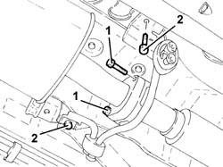
Applies to: engines: 1.6 TS; all production periods; only with equipment: 103 CV
1. Loosen the collar fixing the intermediate exhaust silencer to the rear exhaust silencer.
2. Release the intermediate exhaust silencer from the rear flexible mounting.
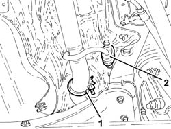
Applies to: engines: 1.6 TS; all production periods; only with equipment: 103 CV
1. Undo the bolt fixing the intermediate exhaust silencer front flexible mounting.
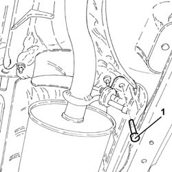
Applies to: engines: 1.6 TS; all production periods; only with equipment: 103 CV
1. Remove the intermediate exhaust silencer after having released it from the rear exhaust silencer.
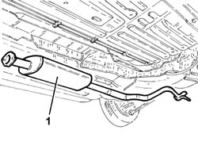
Applies to: engines: 1.6 TS; all production periods; only with equipment: 103 CV
Refitting
RemovingPlace the intermediate exhaust silencer back in its housing and connect it to the rear exhaust silencer.
Tighten the bolts securing the intermediate exhaust silencer front flexible mounting bracket.
Fasten the intermediate exhaust silencer to the rear flexible mounting.
Tighten the collar fixing the intermediate exhaust silencer to the rear exhaust silencer.
Tighten the bolts fixing the catalytic converter flexible mounting brackets, bodyshell side.
Tighten the bolts fixing the intermediate exhaust silencer to the catalytic converter to the recommended torque.
 | Fastening | Component | Ø | Value (daNm) |
|---|---|---|---|---|
- | Bolt | CATALYTIC CONVERTER (ONE) | M8 | (Intermediate silencer side), 2.7 ÷ 3.3 |
Remove the car from the ramp.
Applies to: engines: 1.6 TS; all production periods; only with equipment: 120 CV
Removing
RefittingPosition the vehicle on the ramp.
1. Loosen the collar fixing the intermediate exhaust silencer to the rear exhaust silencer.
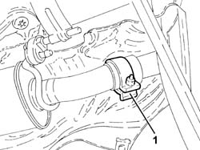
Applies to: engines: 1.6 TS; all production periods; only with equipment: 120 CV
1. Undo the bolts fixing the intermediate exhaust silencer to the catalytic converter.
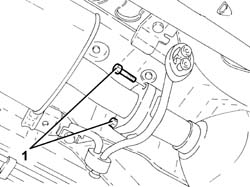
Applies to: engines: 1.6 TS; all production periods; only with equipment: 120 CV
1. Undo the bolt fixing the intermediate exhaust silencer front flexible mounting bracket.
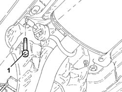
Applies to: engines: 1.6 TS; all production periods; only with equipment: 120 CV
1. Remove the intermediate exhaust silencer (1a) after having released it from the rear flexible mounting (1b).
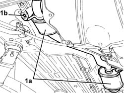
Applies to: engines: 1.6 TS; all production periods; only with equipment: 120 CV
Refitting
RemovingPlace the intermediate exhaust silencer back in its housing and secure it to the rear flexible mounting.
Tighten the bolt fixing the intermediate exhaust silencer front flexible mounting bracket.
1. Tighten the bolts fixing the intermediate exhaust silencer to the catalytic converter to the recommended torque.
| Fastening | Component | Ø | Value (daNm) |
|---|---|---|---|---|
1 | Bolt | CATALYTIC CONVERTER (ONE) | M8 | (Intermediate silencer side), 2.7 ÷ 3.3 |

Applies to: engines: 1.6 TS; all production periods; only with equipment: 120 CV
Tighten the collar fixing the intermediate exhaust silencer to the rear exhaust silencer.
Remove the car from the ramp.
Applies to: engines: 2.0 TS; all production periods
Removing
RefittingPosition the vehicle on the ramp.
1. Loosen the collar fixing the intermediate exhaust silencer to the rera exhaust silencer.
Applies to: engines: 2.0 TS; all production periods
1. Undo the bolts fixing the intermediate exhaust silencer to the catalytic converter.
Applies to: engines: 2.0 TS; all production periods
1. Undo the bolt fixing the intermediate exhaust silencer rear flexible mounting bracket.
Applies to: engines: 2.0 TS; all production periods
1. Remove the intermediate exhaust silencer (1a) after having released it from the rear flexible mounting (1b).
Applies to: engines: 2.0 TS; all production periods
Refitting
RemovingPlace the intermediate exhaust silencer back in its housing and secure it to the rear flexible mounting.
Tighten the bolt fixing the intermediate exhaust silencer front flexible mounting bracket.
1. Tighten the bolts fixing the intermediate exhaust silencer to the catalytic converter to the recommended torque.
| Fastening | Component | Ø | Value (daNm) |
|---|---|---|---|---|
1 | Bolt | CATALYTIC CONVERTER (ONE) | M8 | (Intermediate silencer side), 2.7 ÷ 3.3 |
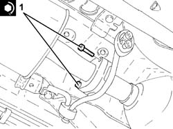
Applies to: engines: 2.0 TS; all production periods
Tighten the collar fixing the intermediate exhaust silencer to the rear exhaust silencer.
Remove the car from the ramp.
Applies to: engines: 3.2 V6; all production periods
Removing
RefittingPosition the vehicle on the ramp.
1. Loosen the collar fixing the rear exhaust silencer to the intermediate exhaust silencer.
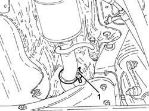
Applies to: engines: 3.2 V6; all production periods
1. Undo the bolts fixing the intermediate exhaust silencer to the catalytic converter assembly.
2. Remove the intermediate exhaust silencer (2a) after releasing it from the flexible support (2b) and the rear exhaust silencer.
Remove the gasket.
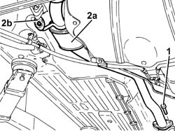
Applies to: engines: 3.2 V6; all production periods
Refitting
RemovingRefit the intermediate exhaust silencer, complete with gasket, in its seating, connect it to the rear exhaust silencer and secure it to the flexible mounting.
Tighten the bolts fixing the intermediate exhaust silencer to the catalytic converter assembly to the recommended torque.
| Fastening | Component | Ø | Value (daNm) |
|---|---|---|---|---|
- | Bolt | CATALYTIC/ CONVERTER/S | M8 | (Intermediate silencer side) 2.3 ÷ 2.8 |
Tighten the collar fixing the intermediate exhaust silencer to the rear xhaust silencer.
Remove the car from the ramps.
Applies to: engines: 1.9 JTD 8V; all production periods
Removing
RefittingPlace the car on a ramp.
Raise the lift.
1. Undo the catalytic converter retaining bolts.
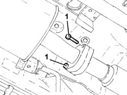
Applies to: engines: 1.9 JTD 8V; all production periods
1. Loosen the collar fixing the intermediate exhaust silencer to the rera exhaust silencer.
2. Release the intermediate exhaust silencer from the rear flexible mounting.
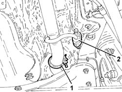
Applies to: engines: 1.9 JTD 8V; all production periods
1. Undo the bolt fixing the intermediat exhaust silencer front flexible mounting bracket.
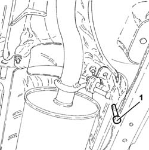
Applies to: engines: 1.9 JTD 8V; all production periods
1. Remove the intermediate exhaust silencer after having released it from the rear exhaust silencer.
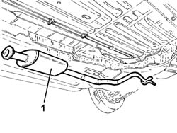
Applies to: engines: 1.9 JTD 8V; all production periods
Refitting
RemovingFit the intermediate exhaust silencer and connect it to the rear exhaust silencer.
Tighten the bolt securing the intermediate exhaust silencer front flexible mounting bracket to torque.
Secure the intermediate exhaust silencer to the rear flexible mounting.
Tighten the coupling collar retaining nut to torque.
| Fastening | Component | Ø | Value (daNm) |
|---|---|---|---|---|
- | Nut | REAR EXHAUST SILENCER | M10 x 1.25 | 4.5 |
Tighten the bolts securing the intermediate exhaust silencer to the catalytic converter to torque.
| Fastening | Component | Ø | Value (daNm) |
|---|---|---|---|---|
- | Bolt | EXHAUST PIPE TO ENGINE | M8 | (catalytic converter) 3 |
Remove the vehicle from the ramp.
Topics that link to this page (10)
- S05 ENGINE HISSING
- S11 ENGINE'BUZZING
- 1040A10 fuel tank - r + r and decant fuel
- 1040A14 fuel tank - r + r for replacement
- 1040B30 fuel delivery line - r r
- 1076A40 exhaust pipe heat shield - r r
- 1076A48 catalytic converter heat shield - r r
- 1080E60 pipe from fuel vapour separator to activated carbon filter - r r
- 3340B67 rh brake connection pipe - r r
- 3340B69 rhp brake connection pipe - r r